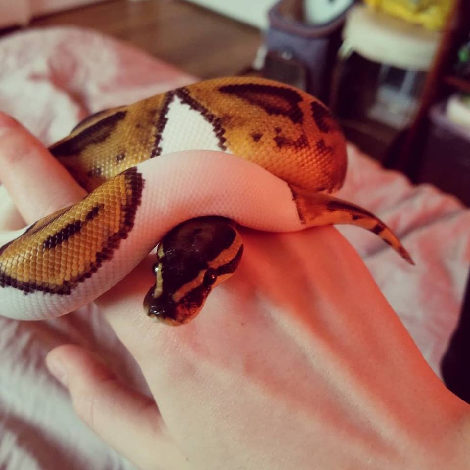

I'm 26 years old and I live in Portland, Oregon. I have lived in Oregon my whole life, but I grew up in Eugene specifically.
In my spare time I run a weekly social partner Blues dance in Portland for Portland Blues & Jazz Dance Society, I go rock climbing, and I play video games. I mostly play Overwatch, Beat Saber on my Oculus (Virtual Reality), and Killer Queen (which is a 10-player arcade game). I travel around the country to play Killer Queen with friends for fun. Check out the website I built for our local Killer Queen scene if you're curious: killerqueenpdx.buzz
I have a baby pet Ball Python named Belenus whom I adore. He's a "piebald" morph which means he has sections that are pure white along his body.
All of my coding knowledge is self taught, so this is the first in-person class I've attended for programming. I used to be a caregiver for adults with developmental disabilities, but I transitioned away from that 4 years ago when I got my current job at Squarespace as a Customer Care Specialist. I started playing around with websites on the Squarespace platform and teaching myself how to inpect a page and use CSS, and since then I've started learning HTML, Javascript, and Python. I really enjoy problem solving and learning new technical skills, so I'm taking this class to help bridge some of the gaps with my self-taught knowledge and keep moving forward so I can eventually change my career into a more technical position.
This is a simple page that says "Fuck yes, rainbow" and changes both the background and text colors when you change the size of the browser window (doesn't work on mobile). This page uses HTML and CSS.
This is the homepage for a cupcake shop with a large image below the headline and some descriptive text below. This page uses HTML and CSS.
This page has information about 3 animals available for adoption from an animal shelter. This page uses HTML and CSS.
This is a basic page about my programming partner's and my favorite things listed together. This page uses HTML and CSS.